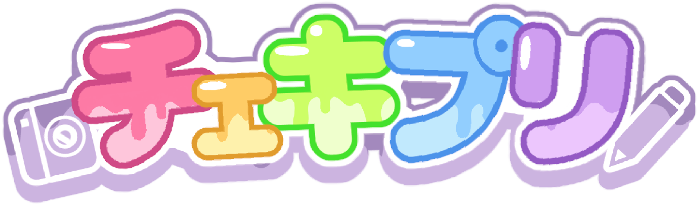
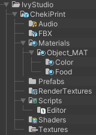
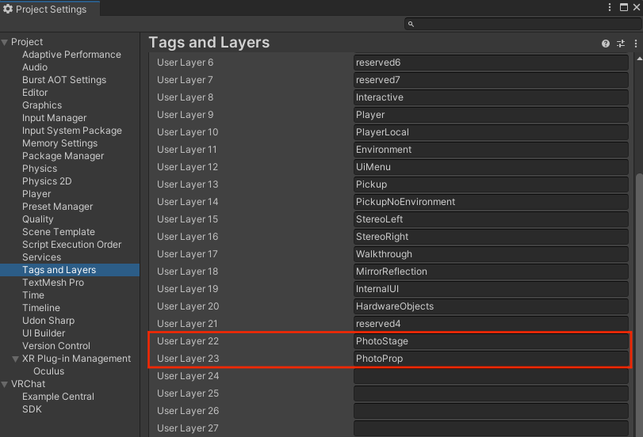
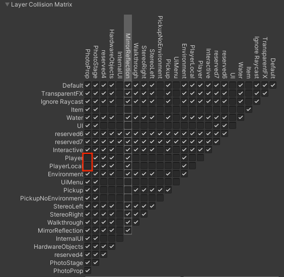
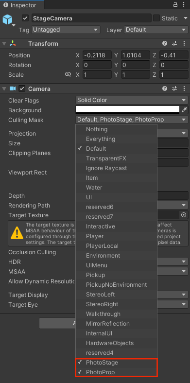
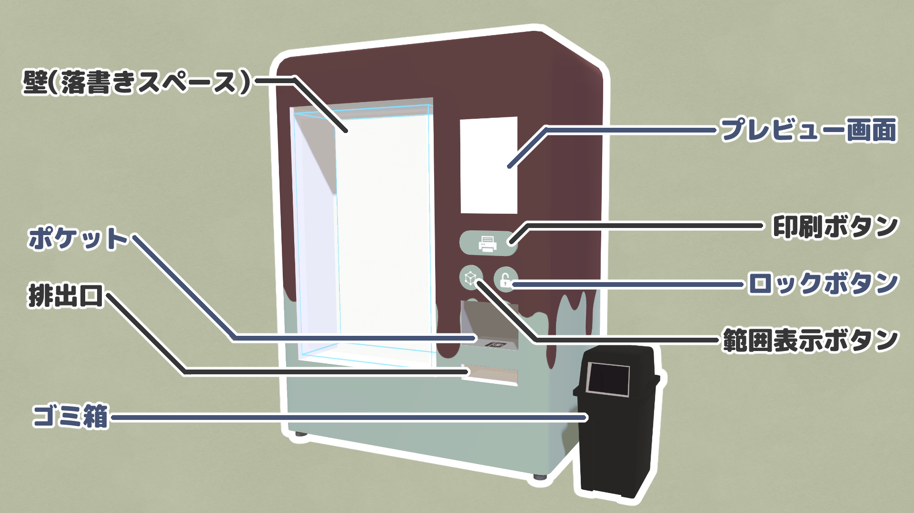
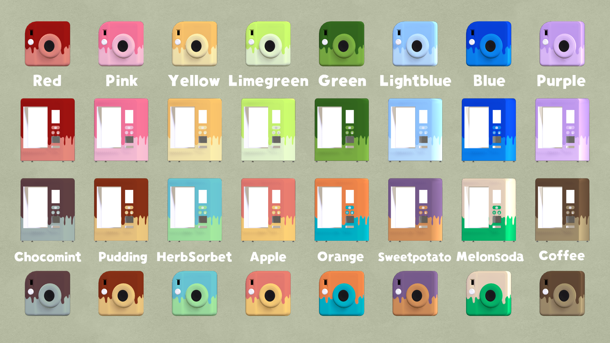
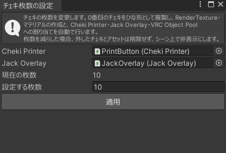

VRChat向けワールドギミック
『チェキプリ』説明書
ver.1.0 ／ 更新日：2026年11月15日 ／ Ivy Studio（かぃたんだ）
1. はじめに
この度は「チェキプリ」をお買い上げいただき、誠にありがとうございます。
本ギミックは、VRChatのワールドに設置する撮影ブースです。付属のカメラで撮影した写真に、QvPenでの落書きや小物を加え、手に取れるチェキとして印刷することができます。撮影から印刷までの結果は、インスタンス内の全員に同期されます。
ご使用の前に、本説明書と利用規約を必ずお読みください。
2. 内容物
zipファイルの内容
| ChekiPrint.zip | |
| ├─ ChekiPrint_ver1.0.unitypackage | 本体 |
| ├─ 落書きできる！チェキプリ【VRChat向けワールドギミック】 - BOOTH | BOOTHの商品ページへのリンク |
| ├─ 『チェキプリ』説明書 - Ivy Studio | 説明書（本ページ）へのリンク |
| ├─ Tex_PrintMachine.psd | 筐体のテクスチャ作成用のPSD |
| ├─ Tex_TrashBox.psd | ゴミ箱のテクスチャ作成用のPSD |
| ├─ JP_Ivy Studio ワールドギミック共通利用規約.pdf | 利用規約（VN3ライセンス 日本語版） |
| ├─ EN_Ivy Studio ワールドギミック共通利用規約.pdf | 利用規約（VN3ライセンス 英語版） |
| └─ ChekiPrint_logo.png | ロゴ画像 |
unitypackageの内容
インポートすると、以下のフォルダがプロジェクトに追加されます。ワールドに配置するのは、ChekiPrint.prefab、または Prefabs フォルダ内の色違いのPrefabのうち、いずれか1つです。
| Assets | |
| └─ IvyStudio | |
| └─ ChekiPrint | 本体のPrefab（ChekiPrint.prefab）1個 |
| ├─ Audio | 効果音 6個（OtoLogic様の音素材） |
| ├─ FBX | モデル 3個（筐体・カメラ・ゴミ箱） |
| ├─ Materials | チェキ用 10個、写真・画面・範囲表示用など 10個 |
| │ └─ Object_MAT | ゴミ箱の色違い 2個（Black / Gray） |
| │ ├─ Color | 筐体の色違い 8個 |
| │ └─ Food | 筐体の色違い 8個 |
| ├─ Prefabs | カラーバリエーション別のPrefab 15個 |
| ├─ RenderTextures | 撮影・合成用 4個、チェキ用 10個 |
| ├─ Scripts | UdonSharpスクリプト 10個 |
| │ └─ Editor | チェキ枚数の設定ツール 1個 |
| ├─ Shaders | シェーダー 2個（範囲表示・VRChatカメラ連携） |
| └─ Textures | 筐体のテクスチャ 16個、ゴミ箱のテクスチャ 2個、ロゴ 1個 |
3. 動作環境
- Unity 2022.3.22f1
- VRChat SDK - Worlds 3.9.0以上（動作確認：3.9.0、3.10.5）
- PC専用（Android・iOSには対応しておりません）
以下のアセットは本商品に含まれておりません。別途VCCまたはALCOMから導入してください。
- lilToon（必須） 動作確認：2.3.4
- QvPen（推奨） 動作確認：3.3.15 ※落書きに使用します。
4. 導入方法
lilToon・QvPenの導入
必ず事前にlilToonをワールドのプロジェクトに追加してください。導入済みの場合は、次の手順へお進みください。
lilToon：https://lilxyzw.github.io/lilToon
落書き機能を使用する場合は、QvPenもあわせて導入してください。
QvPen：https://booth.pm/ja/items/1555789
本商品のインポート
Unityのメニューから「Assets」→「Import Package」→「Custom Package...」を選択し、ダウンロードしたunitypackageをインポートしてください。

レイヤーの設定
本商品は、写真に写す対象を管理するため、専用のレイヤーを2つ使用します。
この設定を行わない場合、落書きや小物が写真に写りません。
「Edit」→「Project Settings」→「Tags and Layers」を開き、User Layer 22・23が空いているかを確認してください。
22・23が空いている場合
- User Layer 22 に
PhotoStage、User Layer 23 にPhotoPropと入力します。 - 同じ画面の左側の一覧から「Physics」を開き、「Layer Collision Matrix」で、PhotoPropとPlayer、PhotoPropとPlayerLocalの交点のチェックを外します。
※小物とプレイヤーが衝突しないようにするための設定です。


22・23のいずれかを使用している場合
空いている番号のうち、最も小さい番号にPhotoStage、次に小さい番号にPhotoPropを登録し、上記2.と同じ設定を行ってください。
あわせて、次のPrefabの配置後に、以下の設定が必要です。
PhotoBox内のPhotoQuad・WallFrameのLayerを、PhotoStageに変更するLogoQuadのLayerを、PhotoPropに変更する- 以下の3つのカメラの「Culling Mask」で、PhotoStage・PhotoPropにチェックを入れ、元の22番・23番のチェックを外す
PhotoBox>StageCamera／ShutterCamera／PhotoCamera>ViewfinderCamera

Prefabの配置
ChekiPrint.prefab（色違いを使用する場合は Prefabs フォルダ内のPrefab）をHierarchyにドラッグ＆ドロップし、任意の位置に移動してください。

- 移動する際は
ChekiPrintを移動してください。PhotoBoxのみを移動すると、カメラやチェキとの位置関係がずれます。 - 1つのワールドに配置できるのは1台までです。
5. ワールドでの使い方

撮影
カメラを手に持ち、Useで撮影します。撮影した写真はカメラの背面に表示されます。
写真の表示中にUseを押すとライブ映像に戻り、再度Useを押すと撮影します。
写真の転送
カメラをポケットの近くで離すと、カメラがポケットにセットされ、最後に撮影した写真がブースの壁に転送されます。
落書き・小物の配置
壁の写真に、QvPenで落書きをしたり、小物を配置したりできます。チェキの白い余白部分にも描き込めます。
範囲表示ボタンを押すと、写真に写る範囲が半透明で表示されます。表示は、ボタンを押した本人にのみ見えます。
印刷
印刷ボタンを押すと、壁の写真が落書きや小物ごとチェキとして印刷された状態で排出口から排出されます。チェキは手に持って移動できます。
削除
チェキをゴミ箱に入れると削除されます。
同時に存在できるチェキは、初期設定で10枚までです。上限に達している間は、印刷ボタンを押すと警告音が鳴り、印刷されません。チェキを削除すると、再度印刷できるようになります。
ロック
カメラがポケットにセットされている状態でロックボタンを押すと、シャッターが降り、カメラを取り出せなくなります。再度押すと解除されます。ロックした人がインスタンスから退出した場合は、自動で解除されます。
VRChatのカメラとの連携
VRChatのカメラをチェキに近づけると、チェキの写真がカメラの画面全体に表示されます。チェキの写真を、そのままVRChatのカメラで撮影できます。

長押しの操作
- 印刷ボタンを3秒長押し：すべてのチェキを排出口に集めます。操作できるのはインスタンスオーナーのみです（パブリック・グループインスタンスではマスター）。手に持たれているチェキは対象外です。
- ロックボタンを3秒長押し：カメラをポケットに戻します。どなたでも操作できます。カメラが手に持たれている場合は戻りません。また、この操作では写真は壁に転送されません。
6. カスタマイズ
色の変更
Prefabs に色違いのPrefabを、Materials/Object_MAT に色違いのマテリアルを同梱しています。

| Color | Blue / Green / Lightblue / Limegreen / Pink / Purple / Red / Yellow |
|---|---|
| Food | Apple / ChocolateMint（初期設定） / Coffee / Creamsoda / Herbsorbet / Orange / Pudding / Sweetpotato |
| ゴミ箱 | Black（初期設定） / Gray |
色違いのPrefabを配置する場合、以下の割り当ては不要です。
筐体とカメラは同じマテリアルを使用しています。以下の8か所すべてに、同じマテリアルを割り当ててください。
PhotoBox>ModelRoot>Print_Machine内の PrintMachine・Leg・PrintButton・GuideButton・LockButtonPhotoCamera>Cam内の Cam・Button・Lens
ゴミ箱は PhotoBox > ChekiTrash > TrashBox 内の Box・Lid です。
チェキの枚数の変更
同時に存在できるチェキの枚数（初期設定：10枚）は変更可能です。
- Unityのメニューから「Tools」→「Ivy Studio」→「ChekiPrint」→「チェキ枚数の設定」を開きます。
- 「Cheki Printer」に
PhotoBox>PrintButtonを、「Jack Overlay」にJackOverlayを、Hierarchyからドラッグします。 - 枚数を入力して「適用」を押し、完了後にシーンを保存します。

21枚以上に設定する場合
推奨は10枚、動作確認は20枚までです。
21枚以上にも設定できますが、チェキ1枚につき約4.5MBのVRAMをインスタンス内の全員の環境で使用するため、枚数に応じて動作が重くなります。21枚以上での動作は保証いたしかねますので、自己責任でご利用ください。
※枚数を減らした場合、対象外となったチェキは削除されず非表示になります。必要な場合は適宜削除してください。
ブースの大きさの変更
PhotoBox のScaleで、ブース本体の大きさを変更できます。撮影範囲などは、ワールドの起動時に自動で補正されます。
- ScaleのX・Y・Zは、必ず同じ値にしてください。
- カメラとチェキの大きさは変えられません。
- 最上位の
ChekiPrintのScaleは変更しないでください。
撮影用の小物の追加
写真の前に配置した小物は、チェキに写し込まれます。小物を追加する場合は、Layerを PhotoProp に設定してください（子オブジェクトを含む）。
LayerがPickupのオブジェクトは写真に写りません。設定後、LayerがPhotoPropになっていることを必ずご確認ください。
※写真に写るのは、範囲表示ボタンで表示される範囲の内側のみです。範囲内にワールドの壁や床などがある場合、それらも写り込むためご注意ください。
そのほか
- ワールドの起動時、カメラはポケットにセットされた状態になります。配置した位置から開始する場合は、
PhotoBox>LockButtonの「Start Docked」をオフにしてください。 - 効果音の音量は、名前が
SFX_で始まるオブジェクトのAudio Sourceの「Volume」で変更できます。
7. 仕様と注意点
- 撮影・転送・印刷・削除・ロック状態は、インスタンス内の全員に同期されます。
- 写真はカメラの位置と向きを同期し、各参加者の環境でそれぞれ撮影しています。そのため、アバターカリングの影響や動いているアバターのポーズなど、写真の細部が参加者ごとに異なる場合があります。
- 後からインスタンスに参加した人には、参加前に撮影・印刷された写真とチェキは白紙で表示されます。
- 連続操作を防ぐため、撮影と印刷は1秒、ロックは0.5秒の間隔をあけないと反応しません。
- 負荷軽減のため、カメラの画面はカメラを持っている人の環境でのみ、筐体のプレビュー画面は筐体から約3m以内にいる人の環境でのみ更新されます。
- VRChatのカメラとの連携には、MirrorReflectionレイヤー（18番）を使用しています。
8. よくある質問
インポート後にスクリプトのエラーが表示される／スクリプトが外れている
VRChat SDK - Worldsのバージョンが古い可能性があります。VCCまたはALCOMで更新した後、本商品を再度インポートしてください。
筐体やカメラがピンク色で表示される
lilToonが導入されていないか、バージョンが古い可能性があります。VCCまたはALCOMからlilToonを導入・更新してください。
チェキに落書きや小物が写らない
レイヤーの設定をご確認ください。22・23番以外に登録した場合は、オブジェクトのLayerとカメラのCulling Maskの変更も必要です。小物の場合は、LayerがPhotoPropになっているかもご確認ください。なお、QvPenのインクのレイヤーをDefaultから変更している場合も写りません。
小物にプレイヤーが衝突する
Layer Collision Matrixで、PhotoPropとPlayer・PlayerLocalの交点のチェックが外れているかご確認ください。
印刷ボタンを押すと警告音が鳴り、印刷されない
チェキが上限の枚数に達しています。不要なチェキをゴミ箱で削除してください。
印刷ボタンを長押ししてもチェキが集まらない
この操作は、インスタンスオーナー（パブリック・グループインスタンスではマスター）のみ可能です。手に持たれているチェキは対象外です。
カメラを手に取れない
カメラがロックされています。ロックボタンを押して解除してください。
カメラを見失った
ロックボタンを3秒長押しすると、カメラがポケットに戻ります。
後から参加した人のチェキが白紙で表示される
仕様です。写真の画像データは通信で送信できないため、参加前に撮影・印刷された写真は白紙で表示されます。
ブースの大きさを変更したら、撮影範囲がずれた
PhotoBoxのScaleのX・Y・Zが同じ値になっているか、最上位のChekiPrintのScaleを変更していないかご確認ください。
上記で解決しない場合は、お問い合わせ先までご連絡ください。
9. 利用規約・クレジット
本商品の利用規約は、Ivy Studioが公開しているVN3ライセンスに準拠します。ご利用前に必ずお読みください。利用規約（日本語版・英語版）は、zipファイルにも同梱しています。
→ Ivy Studio ワールドギミック共通利用規約（VN3ライセンス）
特記事項
VN3ライセンスに加え、以下の事項が適用されます。
- 同梱の効果音（Audioフォルダ内の音声ファイル）は、OtoLogic様の音素材です。これらはVN3ライセンスの対象外であり、OtoLogic様の利用規約（CC BY 4.0）に従います。
- 同梱の音素材を使用したワールドを公開する場合は、ワールド内のクレジットボードへの以下のクレジットの掲載を義務とします。
- lilToon・QvPenは本商品に含まれておりません。それぞれの配布元の規約に従ってご利用ください。
クレジット
- 制作：Ivy Studio（かぃたんだ）
- 効果音：OtoLogic（https://otologic.jp）CC BY 4.0
- 使用シェーダー：lilToon（lilxyzw様）
- 対応ペン：QvPen（ureishi様）
10. 更新履歴・お問い合わせ
更新履歴
- ver.1.0（2026年11月15日） 初版公開
お問い合わせ
不具合のご報告やご質問は、BOOTHのメッセージ、またはXのDMにてお受けしております。
- BOOTH：Ivy Studio
- X：@VRCtanda
※不具合のご報告の際は、Unity・VRChat SDK・lilToon・QvPenのバージョンと、症状が発生した操作をあわせてお知らせください。
© 2026 Ivy Studio（かぃたんだ）